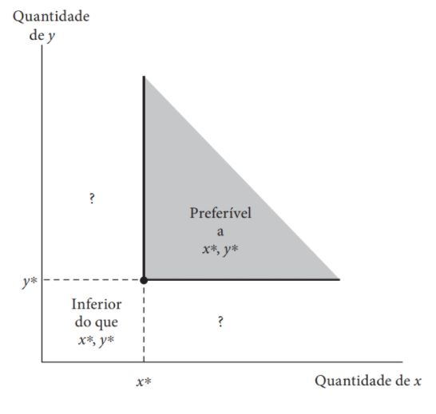
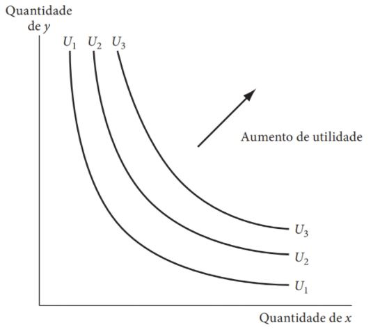
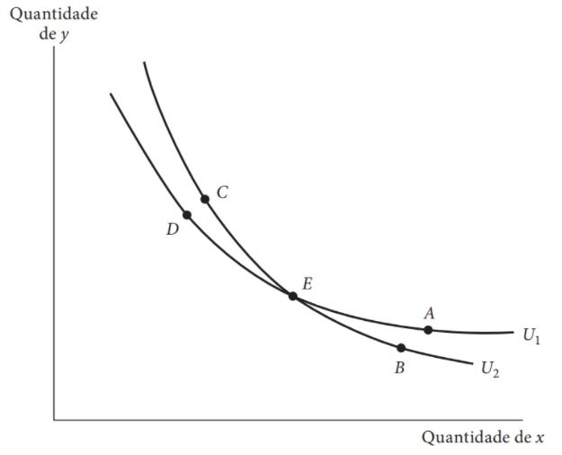
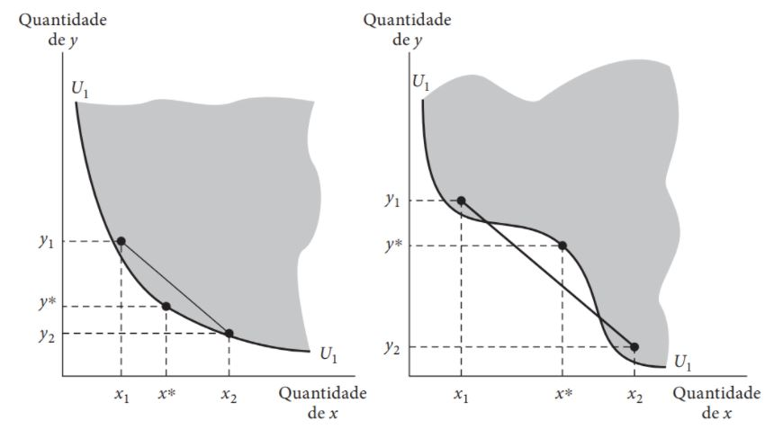

Preferências e Utilidade
Escolha Racional
- Na aula anterior estudamos o problema da escassez que um consumidor está sujeito.
- Agora estudaremos o objetivo do consumidor. A maximização deste objetivo, sujeita à restrição orçamentária do consumidor, é conhecida como problema (primal) do consumidor, que será visto nas próximas aulas.
Cesta de consumo
Cesta de consumo
A cesta de consumo é uma lista de quantidades consumidas pelo consumidor das \(n \geq 2\) mercadorias (bens e serviços) existentes. Por hipótese, as mercadorias são perfeitamente divisíveis, ou seja, \(\textbf{x} = (x_1, x_2, \dots, x_i, \dots, x_n) \in \mathbb{R}^n_+\), na qual \(x_i \geq 0\) é a quantidade consumida do \(i\)-ésimo bem ou serviço por unidade de tempo.
Conjunto consumo
Conjunto consumo - espaço de mercadorias
O conjunto consumo é o conjunto formado por todas as cestas de consumo que o consumidor pode conceber, sendo elas possíveis de serem adquiridas ou não.
- O conjunto de escolha do consumidor pode ser bem geral, e incluir quantidades de bens impossíveis de serem fabricados.
- Enumera, apenas, as possibilidades que o consumidor gostaria de consumir, e não o que é realmente possível de ser consumido (esse é o papel da restrição orçamentária).
Preferências do consumidor
- Pressupomos que o consumidor seja capaz de ordenar as cestas de consumo do seu espaço de mercadorias de acordo com suas preferências, comparando-as em pares.
- Ou seja, para quaisquer duas cestas de consumos \(\textbf{x}\) e \(\textbf{y}\) diferentes, o consumidor é capaz de compará-las: ou \(\textbf{x}\) é pelo menos tão boa quanto \(\textbf{y}\), ou \(\textbf{y}\) é pelo menos tão boa quanto \(\textbf{x}\).
- Chamamos essa relação de preferência, e a denotamos por \(\succeq\). Tecnicamente, \(\succeq\) é uma relação binária sobre o conjunto consumo.
Preferências do consumidor
- Preferência fraca: se o consumidor afirma que \(\textbf{x} = (x_1, \dots, x_n)\) é pelo menos tão boa quanto a cesta de consumo \(\textbf{y} = (y_1, \dots, y_n)\), dizemos que o consumidor prefere fracamente \(\textbf{x}\) a \(\textbf{y}\) e denotamos essa relação por \(\textbf{x} \succeq \textbf{y}\).
- Indiferença: se \(\textbf{x}\) é pelo menos tão boa quanto \(\textbf{y}\), e \(\textbf{y}\) é pelo menos tão boa quanto \(\textbf{x}\), o consumidor mostra-se indiferente entre as duas cestas de consumo. Essa é denotada por \(\textbf{x} \sim \textbf{y}\). Em síntese, \(\textbf{x} \sim \textbf{y} \Leftrightarrow ((\textbf{x} \succeq \textbf{y}) \land (\textbf{y} \succeq \textbf{x}))\).
- Preferência estrita: se \(\textbf{x}\) é pelo menos tão boa quanto \(\textbf{y}\), e não é o caso que \(\textbf{y}\) seja pelo menos tão boa quanto \(\textbf{x}\), dizemos que \(\textbf{x}\) é estritamente preferida a \(\textbf{y}\), denotado por \(\textbf{x} \succ \textbf{y}\). Em suma, \(\textbf{x} \succ \textbf{y} \Leftrightarrow ((\textbf{x} \succeq \textbf{y}) \land \neg(\textbf{y} \succeq \textbf{x}))\).
Axiomas da escolha racional
Vamos supor que as preferências do consumidor satisfaçam os seguintes axiomas:
- Completude: para quaisquer cestas de consumo \(\textbf{x}\) e \(\textbf{y}\) do espaço de mercadorias, temos \(\textbf{x} \succeq \textbf{y}\) ou \(\textbf{y} \succeq \textbf{x}\) (ou ambos).
- Consequentemente, os consumidores não são paralisados pela indecisão: eles conhecem todas as cestas de bens disponíveis e sempre são capazes de compará-las.
- Transitividade: para quaisquer cestas de consumo \(\textbf{x}\), \(\textbf{y}\) e \(\textbf{z}\) do espaço de mercadorias, se \(\textbf{x} \succeq \textbf{y}\) e \(\textbf{y} \succeq \textbf{z}\), então \(\textbf{x} \succeq \textbf{z}\).
- As escolhas de um indivíduo são consistentes internamente.
- Continuidade: se um indivíduo afirma que \(\textbf{x} \succeq \textbf{y}\), então, cestas de consumo “muito próximas” a \(\textbf{x}\) também são fracamente preferidas a \(\textbf{y}\). Formalmente, para quaisquer sequências de pares \(\{\textbf{x}^n,\textbf{y}^n\}_{n=1}^\infty\), tais que \(\textbf{x}^n \succeq \textbf{y}^n\) para qualquer \(n \in \mathbb{N}\), \(\textbf{x} = \lim_{n\to \infty} \textbf{x}^n\), e \(\textbf{y} = \lim_{n\to \infty} \textbf{y}^n\), nós temos \(\textbf{x} \succeq \textbf{y}\).
Pressupostos adicionais da escolha racional
- Convexidade: se \(\textbf{x}\) e \(\textbf{y}\) são cestas de consumo tais que \(\textbf{x} \sim \textbf{y}\), então \(\lambda \textbf{x} + (1-\lambda)\textbf{y} \succeq \textbf{x}, \forall \lambda \in [0,1]\).
O consumidor prefere fracamente cestas de consumo mais balanceadas, ou seja, as médias são fracamente preferidas aos extremos.
Convexidade estrita: se \(\textbf{x}\) e \(\textbf{y}\) são cestas de consumo tais que \(\textbf{x} \sim \textbf{y}\), então \(\lambda \textbf{x} + (1-\lambda)\textbf{y} \succ \textbf{x}, \forall \lambda \in (0,1)\).
- O consumidor prefere de maneira estrita cestas de consumo mais balanceadas, ou seja, as médias são estritamente preferidas aos extremos.
- Monotonicidade (não-saciedade): se \(\textbf{x} \geq \textbf{y}\), então \(\textbf{x} \succeq \textbf{y}\).
- O axioma da monotonicidade diz que mais é melhor.
- Relações de preferência que atendem a estes pressupostos adicionais são chamadas de
Preferências bem-comportadas 👍
Utilidade
Consumidores são caracterizados por suas preferências.
No entanto, do ponto de vista prático, preferências nem sempre são fáceis de manusear e de se extrair inferências econômicas.
Dados os axiomas de completude, transitividade e continuidade, é possível demonstrar formalmente que as pessoas são capazes de rankear todas as situações possíveis da menos desejada para a mais desejada.
Esse ranking, seguindo a terminologia do século XIX de Jeremy Bentham, é denominado Utilidade.
Função Utilidade
Função Utilidade
Uma função utilidade é um modo de atribuir um número real a cada cesta de consumo, de maneira que se atribuam às cestas mais preferidas números mais altos do que os preferidos às cestas menos preferidas. Formalmente, é uma função \(u: M\subset\mathbb{R}_+^n \to \mathbb{R}\) representando a relação de preferência fraca \(\succeq\) sobre o espaço de mercadorias \(M\) se para quaisquer cestas de consumo \(\textbf{x}\) e \(\textbf{y}\) tem-se: \[\textbf{x} \succeq \textbf{y} \Leftrightarrow u(\textbf{x}) \geq u(\textbf{y}).\]
Existência de múltiplas funções utilidade
A transformação monotônica positiva de uma função utilidade é uma função utilidade que representa a mesma ordenção de preferências da função utilidade original.
Formalmente, para qualquer transformação positiva \(f: \mathbb{R} \to \mathbb{R}\), a função composta \(v(\textbf{x}) = f(u(\textbf{x}))\) é uma nova função utilidade representando a mesma função utilidade original \(u: M \to \mathbb{R}\).
Lembrando que uma função \(f: \mathbb{R} \to \mathbb{R}\) é dita realizar uma transformação monotônica positiva se \(f(u_1) > f(u_2)\) sempre que \(u_1 > u_2\). Ou seja, a função \(f(\bullet)\) preserva a ordem dos números \(u_1\) e \(u_2\).
Implicações da não-unicidade da função utilidade
A não-unicidade da função utilidade implica que não faz sentido perguntar “o quanto a cesta de consumo \(\textbf{x}\) é preferível à cesta \(\textbf{y}\)?”.
Portanto, os rankings de utilidade são como os rankings de ordenação de restaurantes ou filmes (utilizando uma, duas ou três estrelas).
A não-unicidade também implica que não é possível comparar utilidades entre pessoas diferentes.
De maneira similar, não é possível mensurar se uma mudança de uma situação \(\textbf{x}\) para uma situação \(\textbf{y}\) provê mais utilidade para uma pessoa ou para outra.
Bens econômicos
Assumimos que as preferências de um indivíduo podem ser representadas por uma função utilidade da forma: \[U(x_1, x_2, \dots, x_n),\] onde \(x_1, \dots, x_n\) são as quantidades de cada um dos \(n\) bens ou serviços que podem ser consumidas em um período do tempo.
Nessa representação, assumimos que as variáveis são bens econômicos. Isto é, quaisquer que sejam as quantidades que elas representem, assumimos uma quantidade maior qualquer de um \(x_i\) em particular, durante algum dado período, será preferida a menos.
Bens econômicos
Figura 1: Mais de um bem é preferível a menos. Fonte: Nicholson & Snyder (2019).
Curvas de indiferença
A maioria das atividades econômicas envolvem trocas voluntárias entre indivíduos.
Essas trocas voluntárias podem ser melhor estudadas utilizando o conceito de curvas de indiferença.
Curva de indiferença
Uma curva de indiferença representa um conjunto de cestas de consumo indiferentes entre si. Ou seja, uma curva de indiferença contém todas as combinações de cestas de consumo que dão o mesmo nível de satisfação ao indivíduo.
Formalmente, a curva de indiferença de uma cesta \(\textbf{x}\) qualquer, em termos de preferências, é dada por: \[ \sim(\textbf{x}) \equiv \{\textbf{y}\in\mathbb{R}_+^n: \textbf{y} \sim \textbf{x}\}. \]
Em termos de função utilidade: \[ \sim(\textbf{x}) \equiv \{\textbf{y}\in\mathbb{R}_+^n: u(\textbf{y}) = u(\textbf{x})\}. \]
Curvas de indiferença: representação gráfica
Figura 2: Curvas de indiferença - caso de 2 bens. Fonte: Nicholson & Snyder (2019).
Curvas de indiferença: representação gráfica
Curvas de indiferença: propriedades
Implicação do axioma da transitividade: curvas de indiferença que representam níveis distintos de preferência não podem ser cruzar, ou seja, se \(\textbf{x} \succ \textbf{y}\) então \(\sim(\textbf{x}) \cap \sim(\textbf{y}) = \emptyset\).
Implicação do axioma da monotonicidade: as curvas de indiferença são negativamente inclinadas.
Implicação do axioma da convexidade estrita: para qualquer cesta de consumo \(\textbf{x}\) do espaço de mercadorias, o conjunto fracamente preferido \(\succeq(\textbf{x}) \equiv \{\textbf{y} \in \mathbb{R}_+^n: \textbf{y} \succeq \textbf{x}\}\) é convexo.
Lembrando que um conjunto qualquer \(S\) é dito convexo se para quaisquer \(x, y \in S\) temos \(\lambda x + (1-\lambda) y \in S\), para todo \(\lambda \in [0,1]\). Essa definição é equivalente a assumir que a função utilidade é quasi-côncava.
Curvas de indiferença: propriedades
Figura 3: Implicação do axioma da transitividade. Fonte: Nicholson & Snyder (2019).
Curvas de indiferença: propriedades
Figura 4: Implicação do axioma da convexidade estrita. Fonte: Nicholson & Snyder (2019).
Taxa Marginal de Substituição
A inclinação da curva de indiferença, pelo axioma da monotonicidade, é negativa.
Portanto, se um indivíduo é forçado a abrir mão de uma certa quantidade do bem \(\textbf{y}\), ele deve ser recompensado por uma certa quantidade de \(\textbf{x}\) para manter-se indiferente entre as duas cestas de consumo.
Taxa Marginal de Substituição
Taxa marginal de substituição (TMS)
A taxa marginal de substituição (TMS) mede a taxa à qual o indivíduo está propenso a substituir um bem por outro. Mais precisamente, a TMS é o negativo da inclinação de uma curva de indiferença \((U_1)\) em um determinado ponto: \[ TMS \equiv \left.-\frac{dy}{dx}\right|_{U=U_1}, \qquad(1)\]
onde a notação indica que a inclinação é calculada ao longo da curva de indiferença \(U_1\).
Taxa marginal de substituição: propriedades
Pelo axioma de monotonicidade, as curvas de indiferença são negativamente inclinadas. Portanto, a TMS, assim definida, é sempre um número positivo. Ou seja, o consumidor só se mantém indiferente se a redução de consumo de um bem for compensada pelo aumento no consumo de um outro bem.
Pelo axioma da convexidade estrita, vimos que o conjunto fracamente preferido \(\succeq(\textbf{x})\) é estritamente convexo.
Combinando ambos, equivale a dizer que a taxa marginal de substituição é decrescente. Ou seja, a taxa à qual um indivíduo com preferências estritamente convexas deseja trocar um bem \(x\) por \(y\) diminui à medida que aumentamos a quantidade do bem \(y\).
Exemplo: Utilidade e TMS
Suponha que um indivíduo derive utilidade do consumo de dois bens \(x\) e \(y\). E que suas preferências sejam representadas pela seguinte função utilidade: \[ U(x, y) = \sqrt{xy}. \]
Calcule a taxa marginal de substituição para este indivíduo.
Qual é a taxa marginal de substituição no ponto \((5, 20)\)? E no ponto \((20, 5)\)? Como interpretar os resultados economicamente?
Mostre que a taxa marginal de substituição é decrescente.
Mostre que uma cesta de consumo balanceada é preferível.
Utilidade e TMS
Suponha que um indivíduo derive utilidade do consumo de dois bens cujas quantidades são dadas por \(x\) e \(y\).
As preferências desse consumidor são representadas pela função utilidade \(U(x,y)\).
As combinações de \(x\) e \(y\) que dão um nível determinado de utilidade a esse agente \(k\) são representadas pelas soluções da função implícita: \[ U(x,y) = k. \]
Tomando o diferencial total da expressão anterior, obtemos: \[ U_x dx + U_y dy = 1dk, \] onde \(U_x \equiv \frac{\partial U(x,y)}{\partial x}\) e \(U_y \equiv \frac{\partial U(x,y)}{\partial y}\) são, respectivamente, as utilidades marginais dos bens \(x\) e \(y\). A utilidade marginal mede o acréscimo na utilidade devido a um aumento marginal no consumo de um bem.
Utilidade e TMS
Na expressão anterior, \(U_x dx + U_y dy = dk\), o primeiro termo mede a mudança na utilidade dada pela mudança em \(x\) (para o bem \(y\) a interpretação é similar).
Como essas mudanças são feitas de modo a manter o nível de satisfação constante, então, \(dk = 0\). Portanto: \[ U_x dx + U_y dy = 0. \]
Logo, temos que: \[ TMS = \left.-\frac{dy}{dx}\right|_{U(x,y) = k} = \frac{U_x}{U_y}. \]
Utilidade e TMS
Calcula a taxa marginal de substituição das seguintes funções utilidade e verifique se as curvas de indiferença são convexas:
\(U(x,y) = \sqrt{xy}\).
\(U(x,y) = x + xy + y\).
\(U(x,y) = \sqrt{x^2 + y^2}\).
Funções utilidade para preferências específicas
Uma função utilidade comumente utilizada é a função do tipo Cobb-Douglas. A função utilidade do tipo Cobb-Douglas apresenta a seguinte forma funcional: \[ U(x,y) = x^\alpha y^\beta, \qquad 0<\alpha, \beta < 1. \]
De forma geral, os parâmetros \(\alpha\) e \(\beta\) representam a importância relativa dos bens \(x\) e \(y\) para este indivíduo.
Normalmente, é conveniente normalizar os parâmetros de forma com que \(\alpha + \beta = 1\). Neste caso, a função utilidade seria dada por: \[ U(x,y) = x^\delta y^{1-\delta}, \] onde \(\delta = \alpha/(\alpha + \beta)\) e \(1-\delta = \beta/(\alpha + \beta)\).
Cobb-Douglas
Substitutos perfeitos
A função utilidade para o caso de bens substitutos perfeitos é dada por: \[ U(x,y) = \alpha x + \beta y, \qquad \alpha,\beta > 0. \]
Neste caso, as curvas de indiferença são lineares.
A linearidade das curvas de indiferença motiva a denominação de bens substitutos perfeitos para descrever a relação entre \(x\) e \(y\).
Uma pessoa com esse tipo de preferências está disposta a abrir mão da mesma quantidade do bem \(y\) para adquirir uma unidade adicional de \(x\), não importa quanto de \(x\) esteja sendo consumido - a TMS é constante e o princípio de taxa marginal de substituição decrescente não se aplica.
Substitutos Perfeitos
Complementares perfeitos
Uma situação diretamente oposta à de substitutos perfeitos é ilustrada para o caso de bens complementares perfeitos, cuja função utilidade é da forma: \[ U(x,y) = \min\{\alpha x, \beta y\}, \qquad \alpha, \beta > 0. \]
Neste caso, as curvas de indiferença tem um formato de \(L\) e a razão da quantidade consumida de \(y\) com relação ao bem \(x\) é constante e igual: \[ \frac{y}{x} = \frac{\alpha}{\beta}. \] Indicando que nenhum dos bens especificados na função utilidade será consumido de maneira supérflua quando \(\alpha x= \beta y\).
Complementares Perfeitos
Elasticidade de substituição constante (CES)
Elasticidade de substituição constante (CES)
A função utilidade do tipo elasticidade de substituição constante (CES) é dada por: \[ U(x,y) = \left[\alpha x^\rho + (1-\alpha)y^\rho\right]^{1/\rho}, \] onde \(\alpha\) é o peso relativo do bem \(x\) na utilidade total, \(\rho\) é o parâmetro de elasticidade de substituição e \(y\) é outro bem.
A elasticidade de substituição entre \(x\) e \(y\) é constante e igual a \(\sigma = \frac{1}{1-\rho}\).
Quando \(\rho = 0\), a função utilidade se reduz a \(U(x,y) = x^\alpha y^{1-\alpha}\), que é a função utilidade do tipo Cobb-Douglas.
Quando \(\rho = 1\), a função utilidade se reduz a \(U(x,y) = \alpha x + (1-\alpha) y\), que é a função utilidade do tipo utilidade de substitutos perfeitos.
Quando \(\rho\rightarrow\infty\), a função utilidade se reduz a \(U(x,y) = \min\{\alpha x, (1-\alpha) y\}\), que é a função utilidade do tipo utilidade de complementares perfeitos.
Elasticidade de substituição constante (CES)
📚 Bibliografia
NICHOLSON, W.; SNYDER C. Teoria microeconômica: Princípios básicos e aplicações. Cengage Learning Brasil, 2019. Disponível em: https://app.minhabiblioteca.com.br/#/books/9788522127030/
VARIAN, H. R. Microeconomia: uma abordagem moderna. 9.ed. Rio de Janeiro: Elsevier, 2015. Disponível em: https://app.minhabiblioteca.com.br/books/9788595155107